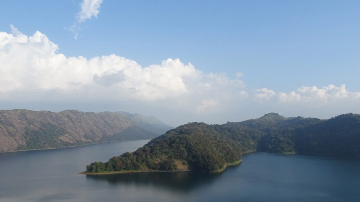
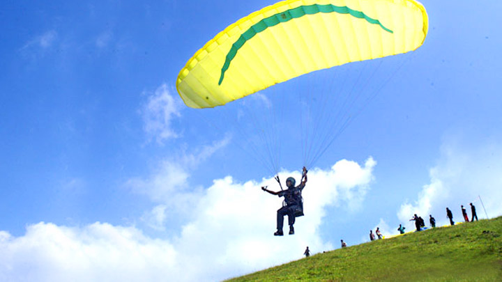
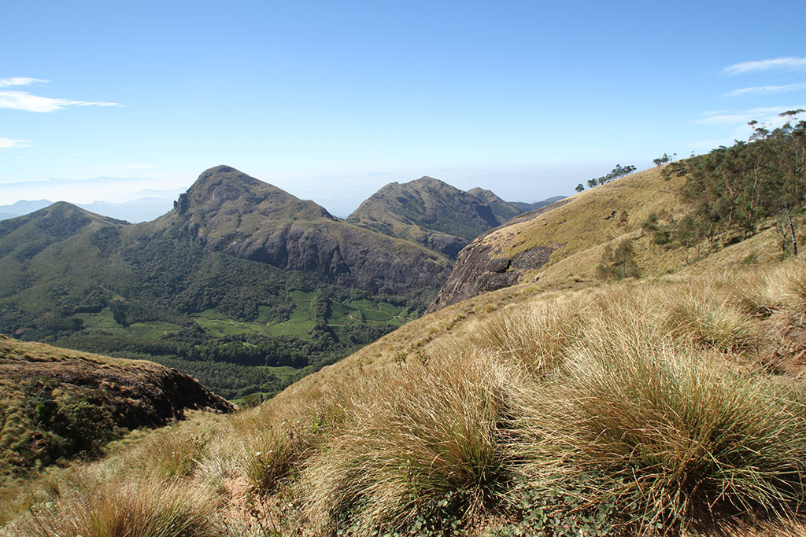
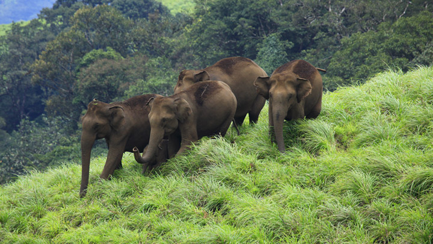

Top 5 places to visit in Idukki
Idukki Arch Dam
A parabolic marvel, aloft at 550 ft and spread out over 650 ft, greets visitors at the Kuravan and Kurathi Hills in Idukki. You have now reached the Idukki Arch Dam, the second in the world and first of its kind in all of Asia. The sight itself is awe-inspiring, considering the sheer magnitude of the structure and the purpose it serves. Nearby lies the Idukki Wildlife Sanctuary where one can seek solace in nature.

Vagamon
Vagamon hill station in Idukki is among the few spots on the planet that need to be experienced first-hand to truly discover its glory. The grassy hills, velvet lawns and overall mysticism of the place cannot be replicated anywhere else in the world. This quaint town lies untouched by any modern influences and is neatly tucked away in Idukki district. Visitors can avail many activities including trekking, paragliding, mountaineering and rock climbing. People love travelling across a chain of three famous hills: Thangal, Murugan and Kurisumala. These are important to Hindus, Muslims and Christians, respectively, and are a perfect example of the communal harmony prevalent in the place. The Kurisumala monks have an enchanting dairy farm nearby that is an absolute delight to visit.

Munnar
Munnar rises as three mountain streams merge - Mudrapuzha, Nallathanni and Kundala. 1,600 m above sea level, this hill station was once the summer resort of the erstwhile British Government in South India. One of the most sought after honeymoon destinations in Kerala, Munnar is replete with resorts and logding facilities that fit a wide rage of budgets. Sprawling tea plantations, picturesque towns, winding lanes and holiday facilities make this a popular resort town. Among the exotic flora found in the forests and grasslands here is the Neelakurinji. This flower which bathes the hills in blue once in every twelve years, will bloom next in 2030. Munnar also has the highest peak in South India, Anamudi, which towers over 2,695 m.

Meesappulimala
Meesappulimala - a destination for the highly adventurous is the second highest peak in the Western Ghats and a trekking trail via Rhodo Valley.
Travel a distance of 24 km from Munnar via Mattupetty through Aruvikkad estate and you will reach the base camp of Meesappulimala. The journey from base camp to Rhodo Valley is in the jeep and is 4 km and is the last point accessible by any four wheelers. En route you can see the Pandava cave.
At night stay in the midst of cloud top at Rhodo Mansion and in the tents and the next day climb to the peak amidst rhododendron trees. Stay can be in your choice, they are providing the stay in three options. This is a hard trekking and needs to do basic preparation. The package includes guide service, breakfast, lunch, evening tea & dinne

Idukki Wildlife Sanctuary
Idukki district is among the most naturally endowed districts in Kerala and the Idukki Wildlife Sanctuary is a prime example. Located about 450-750 m above sea level, the sanctuary is cradled by the Cheruthoni and Periyar Rivers. The beautiful lake surrounding the sanctuary is perfect for romantic boat rides. The tropical evergreen and deciduous trees add to the charm of the place.
One can see elephants, bison, sambar deer, wild dogs, jungle cats, tiger and wild boar along with various species of snake including cobras, vipers, kraits and many non-poisonous snakes. There are many bird species as well, like the Grey Jungle Fowl, Malabar Grey Hornbill, woodpeckers and bulbuls. The sanctuary lies adjacent to the world famous Idukki Arch Dam.
